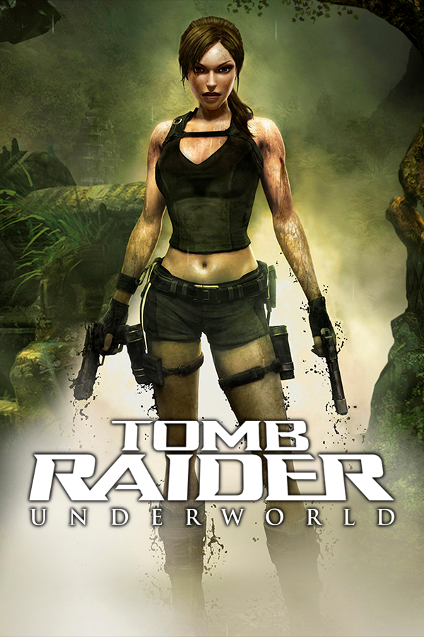

Tomb Raider: Underworld
Tomb Raider: Underworld
Detalhes
|  | |
| Tempo de jogo | Não Jogado |
| Última Atividade | Nunca |
| Adicionado | 09/03/2025 22:47:31 |
| Modificado | 10/03/2025 1:01:17 |
| Status de Conclusão | Not Played |
| Biblioteca | Gog |
| Fonte | GOG |
| Plataforma | PC (Windows) |
| Data de Lançamento | 18/11/2008 |
| Pontuação da Comunidade | 74 |
| Avaliação da crítica | 76 |
| Pontuação do Usuário | |
| Gênero | Action-adventure |
| Desenvolvedor | Crystal Dynamics |
| Editor | Eidos Interactive |
| Funções | Single Player |
| Links | Wikipedia |
| Tag | [EMT] Video Micro missing [EMT] Video missing |
Descrição
Tomb Raider: Underworld is a 2008 action-adventure video game developed by Crystal Dynamics and published by Eidos Interactive for Windows, PlayStation 3, Xbox 360, Wii and Nintendo DS in November 2008. Later versions were released for mobile in December 2008, PlayStation 2 in 2009, and OS X in 2012. Various companies ported or developed the different versions. The ninth overall entry in the Tomb Raider series and third and final in the Legend trilogy, Underworld follows archaeologist-adventurer Lara Croft as she searches for Mjolnir, an artefact key to entering the realm of Helheim, while confronting adversaries from her past. Gameplay features Lara navigating levels set across the world through platforming, fighting enemies and solving puzzles to progress.
Production of Underworld began in 2006 following the release of Tomb Raider: Legend, and was developed in parallel with Anniversary (2007). The scenario was co-written by director Eric Lindstrom and series co-creator Toby Gard; Gard left Crystal Dynamics the following year. The gameplay was redesigned around a principle of Lara's abilities, with her actions created using motion capture for the first time. A new game engine was created for the project, with the team having troubles transitioning onto next-generation hardware and staff shortages due to production of Anniversary. Announced in January 2008 for next-generation hardware, it was delayed into November and also announced for then-current generation hardware. Xbox 360-exclusive downloadable content was released in 2009.
The game received mostly positive reviews from critics, with praise for the environments, story, puzzles, exploration, graphics and the less linear style of gameplay, although criticism was directed at its camera and combat system. It sold below expectations, though ultimately went on to sell over three million copies worldwide. It was the final Tomb Raider title published by Eidos Interactive prior to its 2009 acquisition and rebranding by Square Enix. Following Underworld, Crystal Dynamics rebooted the series a second time, with the subsequent game releasing in 2013.